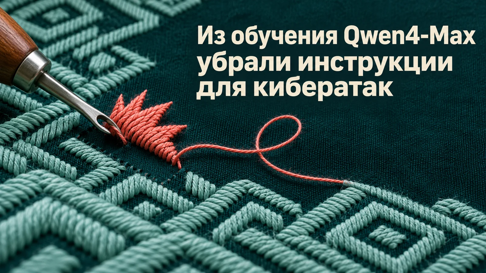

Модели и исследования
Новые языковые модели, архитектуры, бенчмарки и исследования.
18 ноября 2026

Google открыла Gemini 4 Carbon платным пользователям и показала «рой» ИИ-агентов
Новости ИИGoogle расширила доступ к Gemini 4 Carbon: платный API, корпоративные клиенты и подписчики AI Ultra. Показала экспериментальный /swarm, объявила цены до и после 30 ноября.

Китайские нейросети учатся на ответах OpenAI
Новости ИИReuters изучило свыше 300 документов о том, как китайские исследователи используют ответы американских нейросетей для дообучения собственных моделей. Один эксперимент дал 10 750 двуязычных примеров для Qwen.

OpenAI выпустила GPT-6.2 Astra и Sol: новая Astra почти догнала Claude
Новости ИИOpenAI выпустила GPT-6.2 Astra и Sol. Astra почти догнала Claude Fable 5.2 по общему индексу Artificial Analysis, Sol показала низкую стоимость заданий в FrontierCode 2.0.
17 ноября 2026

GPT-6 Astra помогла физику найти решение задачи, над которой работали больше 50 лет
Новости ИИНатаниэль Крейг с помощью GPT-6 Astra предложил математическую конструкцию для непертурбативного описания Стандартной модели на решётке. О роли нейросети физик рассказал 15 ноября.

Alibaba выпустила Qwen4-Max: из обучения нейросети убрали инструкции для кибератак
Новости ИИAlibaba выпустила флагманскую Qwen4-Max с дополнительными мерами против злоупотребления моделью для кибератак, архитектурой MoE и миллионным контекстом.
16 ноября 2026

15 ноября 2026

ИИ Salesforce улучшил другую нейросеть за 80 часов
Новости ИИИсследовательская система Salesforce SFR-AutoR&D за 80 часов улучшила модель поиска документов и затем ускорила её в отдельном девятичасовом эксперименте. Все результаты — по испытаниям Salesforce.
Google выпустила ИИ, который отвечает на тысячу вопросов без слов
Новости ИИGoogle представила Gemini Decision 1 — API для массовой проверки до 1000 условий по тексту, изображениям, аудио, видео и PDF. Модель возвращает вероятности заранее заданных ответов вместо генерации текста.

Alibaba показала Qwen 4 Max — и сразу назначила дату отключения
Новости ИИAlibaba выпустила предварительную мультимодальную Qwen4-Max-Preview с контекстом до миллиона токенов, поддержкой инструментов и видео. Тестовый доступ к этой версии ограничен сроком до 25 ноября 2026 года.

Японцы открыли пять ИИ-моделей для беспилотных машин
Новости ИИЯпонская TIER IV представила пять ИИ-моделей для автономного вождения на платформе Autoware. Варианты различаются используемыми датчиками, картами, вычислительным оборудованием и степенью готовности к дорожным испытаниям.
14 ноября 2026

ИИ научили снимать будущее
Новости ИИИнститут фундаментальных моделей при MBZUAI выпустил открытую PAN 2: модель создаёт до 20 секунд видео возможных последствий действий по картинке и текстовому описанию, а в тестах разработчиков полностью воспроизвела 34% многошаговых сценариев.

Роботам дали «мышечную память» — теперь они справляются с 92% испытаний
Новости ИИИсследователи MIT и Университета Карнеги — Меллона разработали Workspace Models: компактная память помогает роботам удерживать важные события и быстрее действовать. В четырёх лабораторных заданиях средний успех достиг 91,5%.

Учёные научили роботов падать в 6,5 раза реже
Новости ИИУчёные Мичиганского университета представили PRISM — модуль управления роботами, который снизил частоту падений в симуляции и повысил успешность захвата предмета настоящим манипулятором.

Google научила ИИ искать причины болезней в отдельных клетках
Новости ИИGoogle DeepMind представила AlphaGenome 2: модель исследует влияние вариантов ДНК на активность генов в отдельных типах и состояниях клеток. Доступна учёным через API.
13 ноября 2026

12 ноября 2026

«Остальное не трогай»: ByteDance показала 100 правок одной картинки в Seedream 5.5
Новости ИИByteDance представила Seedream 5.5 и продемонстрировала 100 последовательных правок одного изображения с сохранением нетронутых областей. Модель также поддерживает прозрачный фон и улучшенную генерацию текста.

Google испытала Gemini Robotics 2.5 на заводах Mercedes-Benz: 96% удачных операций
Новости ИИGoogle DeepMind представила Gemini Robotics 2.5 — модель для управления роботами. На заводах Mercedes-Benz гуманоид Apollo 2 от Apptronik сортировал металлические детали с заявленной успешностью 96%; компания также сообщила об улучшениях в лабораторных задачах.

Zyphra выпустила ZONOS3-Mini: клонирует голос и работает прямо в браузере
Новости ИИZyphra выпустила ZONOS3-Mini — открытую компактную нейросеть для синтеза и клонирования голоса с поддержкой 43 языков, включая русский. Модель задействует около 100 млн из 800 млн параметров и может работать локально в браузере с WebGPU.

Google проверила шифрование Signal с помощью ИИ
Новости ИИGoogle DeepMind представила AlphaProof Code: команда ИИ-агентов за четыре недели математически проверила ключевые свойства защиты в коде библиотеки Signal, создав около 6,5 млн строк формальных доказательств. Система также выявила две ранее исправленные ошибки, специально возвращённые в тестовый код.

Meta выпустила Muse Ember — дешёвого исполнителя для ИИ-агентов
Новости ИИMeta 9 ноября выпустила компактную модель Muse Ember для массовых вспомогательных задач в системах ИИ-агентов. Цена API для запросов до 200 тысяч входных токенов — от $0,10 за миллион входных и $0,50 за миллион выходных; более длинные запросы втрое дороже.